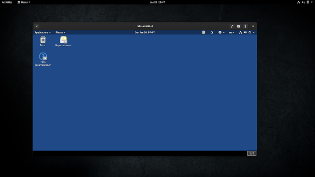

It is sometimes convenient to be able to run Tails without having to restart your computer every time. This is possible using virtual machines.
With virtual machines, it is possible to run Tails inside a host operating system (Linux, Windows, or macOS). A virtual machine emulates a real computer and its operating system, called a guest, which appears in a window on the host operating system.
When running Tails in a virtual machine, you can use most features of Tails from your usual operating system, and you can use both Tails and your usual operating system in parallel, without the need to restart the computer.
This is how Tails looks when run in a virtual machine on Debian using GNOME Boxes:

We do not currently provide a solution for running a virtual machine inside a Tails host.
Security considerations
Both the host operating system and the virtualization software are able to monitor what you are doing in Tails.
If the host operating system is compromised with a software keylogger or other malware, then it can break the security features of Tails.
Only run Tails in a virtual machine if both the host operating system and the virtualization software are trustworthy.
Traces of your Tails session are likely to be left on the local hard disk. For example, host operating systems usually use swapping (or paging) which copies part of the RAM to the hard disk.
Only run Tails in a virtual machine if leaving traces on the hard disk is not a concern for you.
This is why Tails warns you when it is running inside a virtual machine.
Virtualization solutions
To run Tails inside a virtual machine, you need to have virtualization software installed on the host operating system. Different virtualization software exists for Linux, Windows, and macOS.
The following list includes only free software as we believe that this is a necessary condition for the software to be trustworthy. See the previous warning and our statement about free software and public scrutiny.
Proprietary virtualization software solutions exist such as VMWare but are not listed here on purpose.
VirtualBox is available on Linux, Windows, and Mac. Its free software version does not include support for USB devices and does not allow use of a Persistent Storage.
GNOME Boxes is available on Linux. It has a simple user interface but does not allow use of a Persistent Storage.
virt-manager is available on Linux. It has a more complex user interface and allows use of a Persistent Storage, either by:
- Starting Tails from a USB stick.
- Creating a virtual USB storage volume saved as a single file on the host operating system.